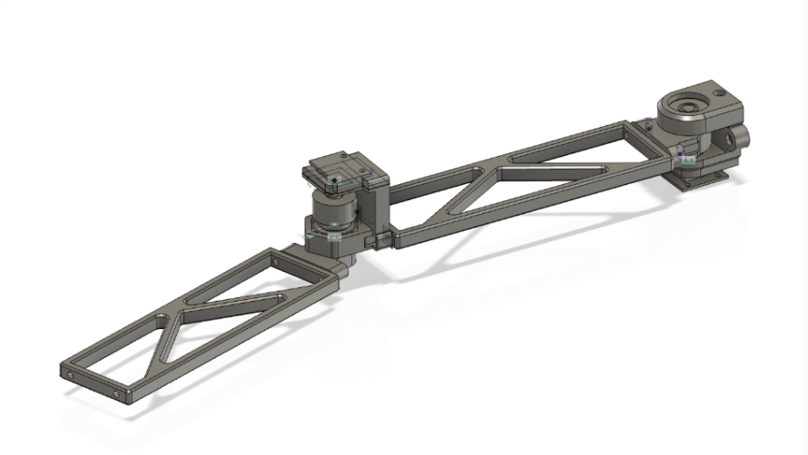

Mirrored Drawing Robot @ MakeHarvard
 GOALS: to create a robot that can mirror input motion using capstan drives
GOALS: to create a robot that can mirror input motion using capstan drives
SKILLS: Rapid prototyping, CAD, Raspberry Pi programming & electronics
This project was done over the course of a 24-hour makeathon. It was heavily inspired by a design that was shown in my Electronics & Controls class, where our professor developed a robot that used a combination of control theory and zero-backlash capstan drives in order to allow the robot to precisely mirror a given input motion. To be honest, there was no real overarching goal of this project other than I thought that design was so cool and I wanted to see how far I could get in recreating it from scratch & from memory, in just 24 hours.
Arm CAD Models

The left (input) arm and the right (output) arm are designed slightly differnetly in order to account for the weight of the electronics
The idea was that while the user was drawing on one side, encoders at the "elbow" and "shoulder" joints would be reading angular data, and sending to the output side through a Raspberry Pi. Another pro I discovered about using capstan drives was that it allowed for both of the motors to be placed at the "shoulder" joint on the output side. Because the weight of the "elbow" motor was now off of the arm, deflection was now much less of an issue and I was able to make the arms of the robot ultra thin and light.
Future Improvements
Believe it or not, this 24-hour project still has a couple rough edges... but here's how I would fix them now:
- The string we used kept losing tension. I would have included a tensioning mechanism to avoid having to manually retension it
- Though it worked once all together, it was a nightmare to assemble. I would have made ease of access and assembly more of a priority in the design phase
- The lack of weight on the arm actually made it hard for the marker to press down hard enough to draw. I would have made the marker holder spring-tensioned.